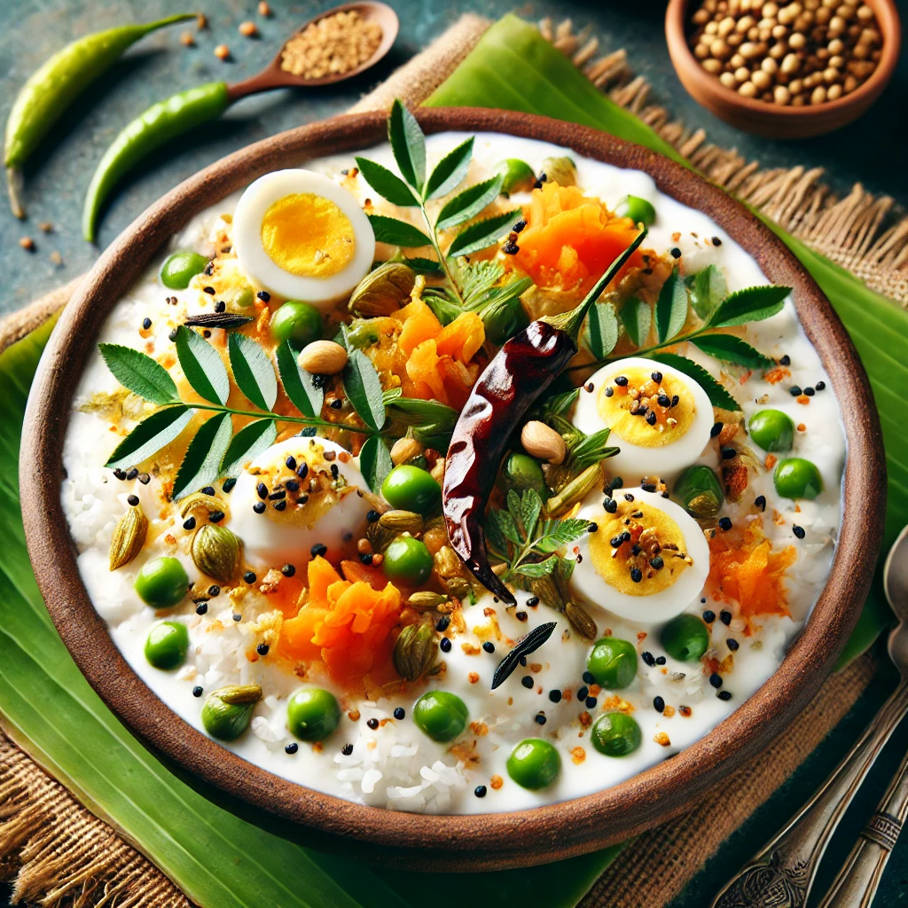
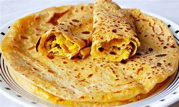
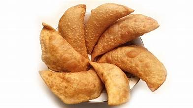

FOOD VARIETIES
üçö Staple Dishes & Rice Varieties

Pulihora – A tangy and spicy tamarind rice dish, garnished with fried curry leaves and mustard seeds.
Daddojanam – A soothing curd rice dish, perfect for balancing out spicy flavors.

Gongura Rice – Rice blended with tangy gongura leaves and a hint of spices, offering a sour yet flavorful experience.
Biyyam Roti – A traditional rice flour roti served with spicy chutneys.

Mamidikaya Pulihora – Raw mango rice with a tangy and spicy twist.
üå∂Ô∏è Signature Curries & Fry Delicacies
Kodi Pulusu – A fiery chicken curry prepared with a blend of local spices and tamarind.

Gutti Vankaya Koora – Baby brinjals stuffed with rich spices and simmered to perfection.
Royyala Iguru – Succulent prawns cooked in a luscious, spicy gravy with aromatic herbs.

Natu Kodi Koora – A village-style country chicken curry cooked with traditional spices.
Bommidala Pulusu – A fish curry cooked with tamarind and local spices.

ü•ó Savory Snacks & Starters

Punugulu – Crispy, deep-fried lentil fritters that are perfect with spicy chutney.
Mirapakaya Bajji – Green chili fritters deep-fried to golden perfection.

Garelu – Crisp lentil doughnuts, often enjoyed with coconut chutney.
Chekkalu – Crispy rice crackers seasoned with spices.

Bobbatlu – Sweet lentil-stuffed flatbreads served during festivals.
üçÆ Sweet Treats & Desserts

Pootharekulu – Delicate rice paper rolls filled with jaggery and ghee.
Ariselu – A festive delicacy made with rice flour, jaggery, and ghee.

Kajjikayalu – Sweet dumplings filled with coconut and jaggery, deep-fried to a golden hue.
Madatha Kaja – A layered, sugar-coated sweet known for its crispy texture.
ü•§ Refreshing Beverages

Panakam – A sweet and spiced cooling drink, traditionally served during festivals.
Majjiga – Spiced buttermilk infused with green chilies and curry leaves.

Neer Mor – A refreshing, mildly spiced buttermilk that cools the senses after a spicy meal.